| siwa | Great Sand sea |
|---|---|
| Shali fortress | |
| Siwa Lake | |
| Fatnis Island | |
| Mountain of The Dead | |
| Temple of The Oracle of Amun |
The third-largest sand accumulation in the world (a sand dune the size of England) spans more than 600 kilometers forming a natural barrier between Libya and Egypt.
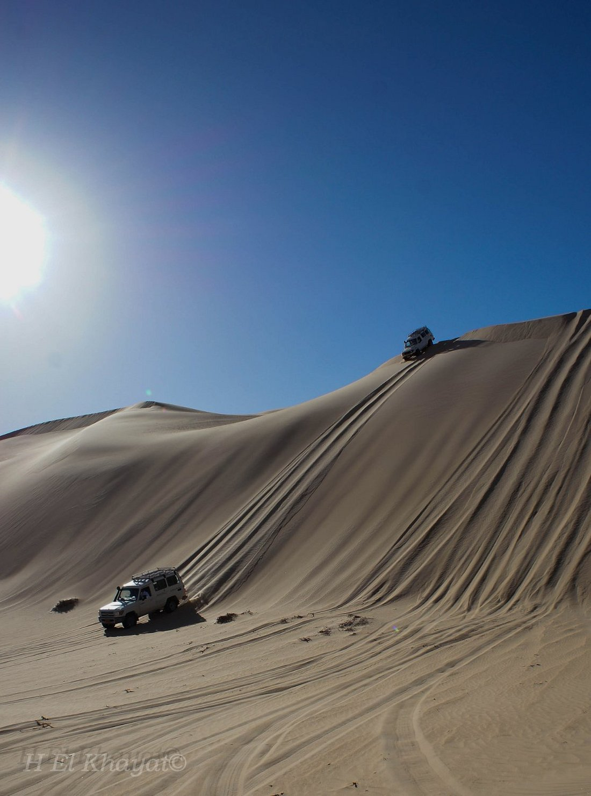
The fortification of Shali is located in the center of modern Siwa in the Siwa Oasis, and is basically the old town. Some of the buildings of the old town are even still in use.
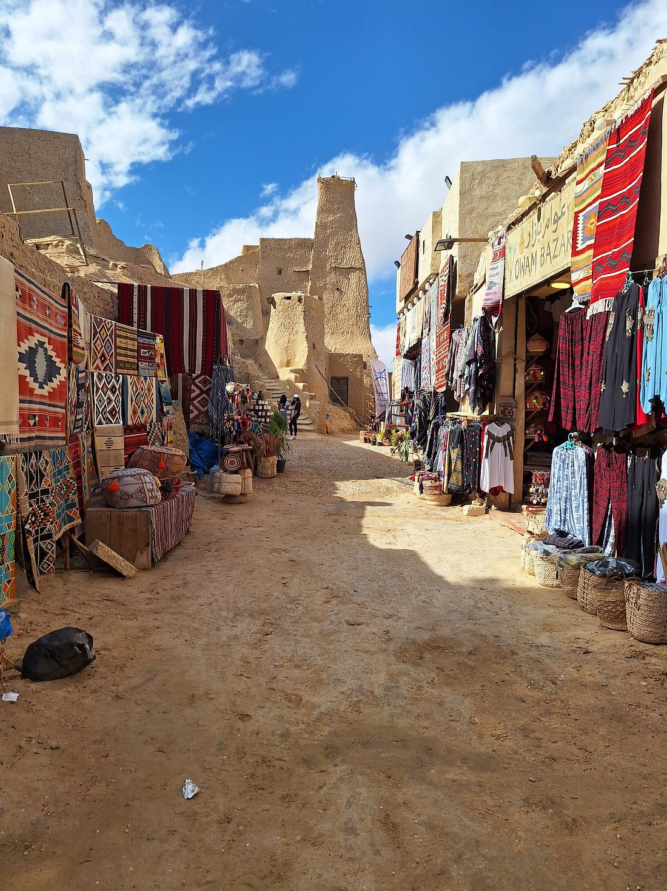 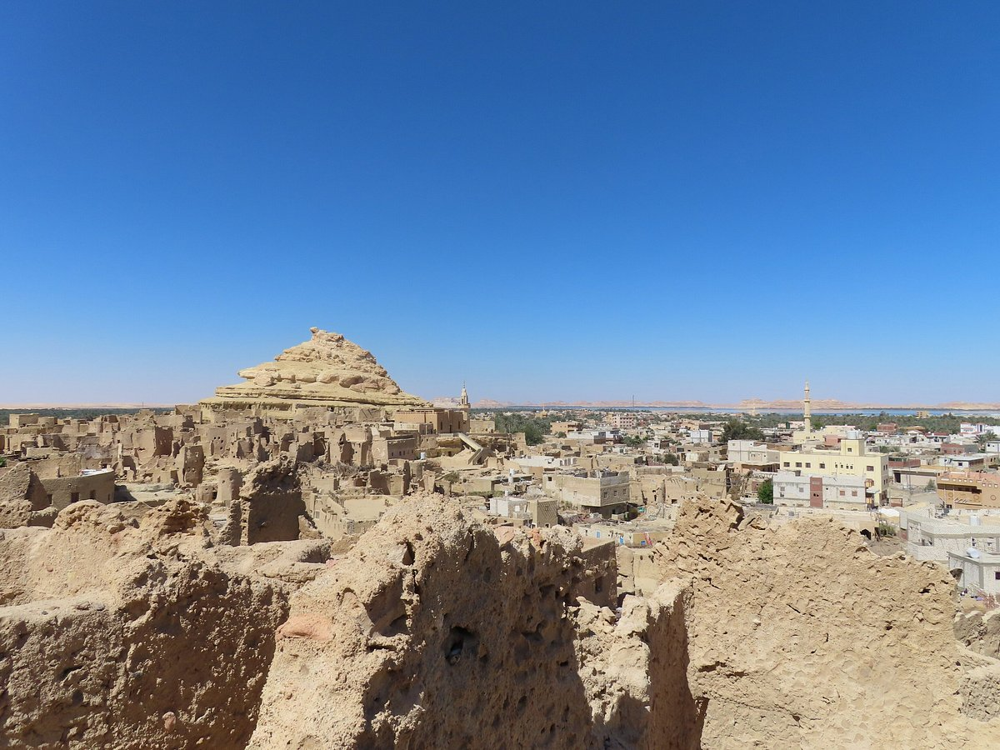The most famous is the salt lake with its high percentage of salts and minerals. it is a relaxation ,healing shallow water where you can float.
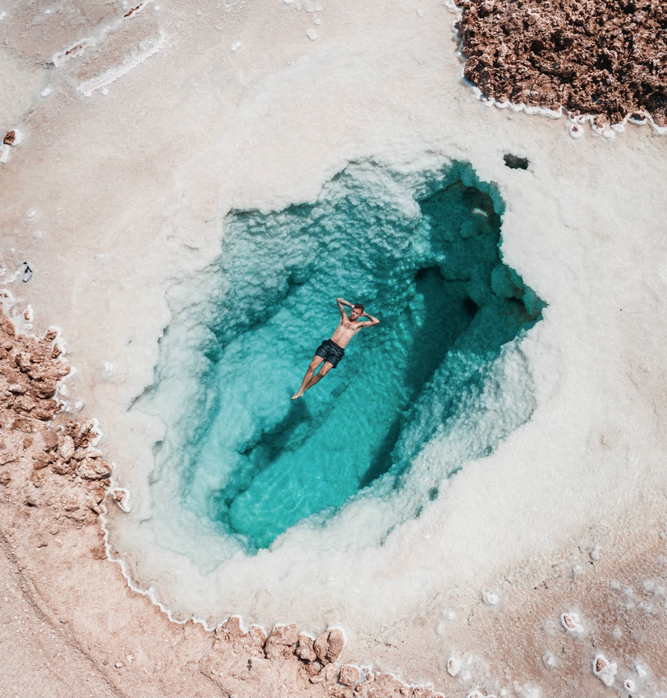 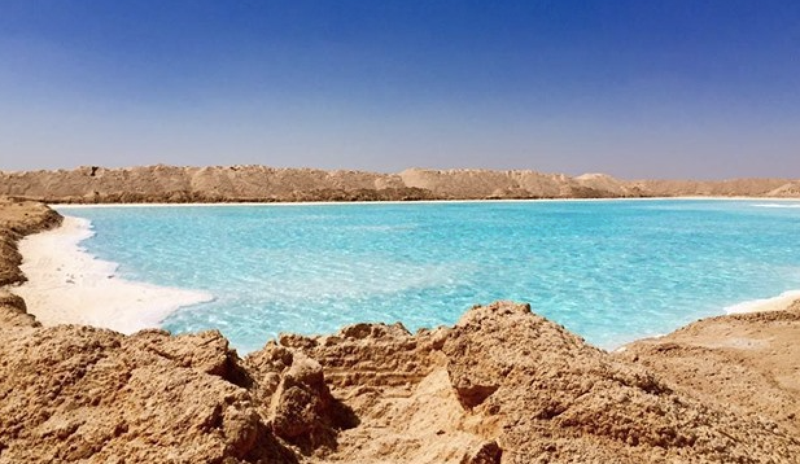Covered in lush palm trees with a secluded freshwater pool in its center, this island is a popular spot for swimming and sunbathing.
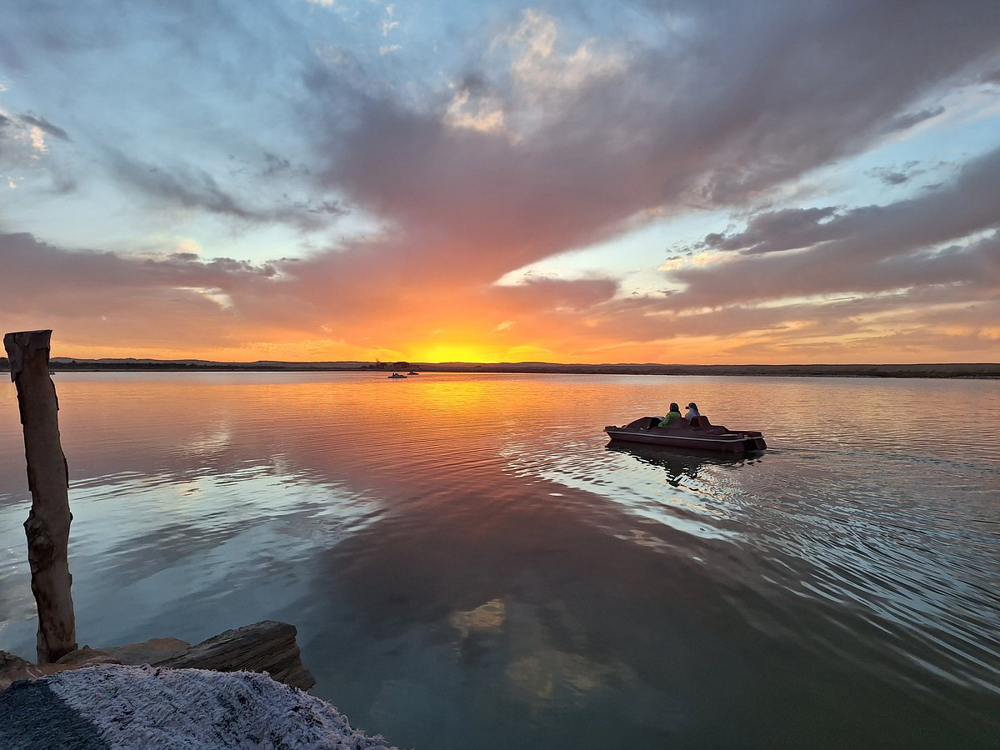 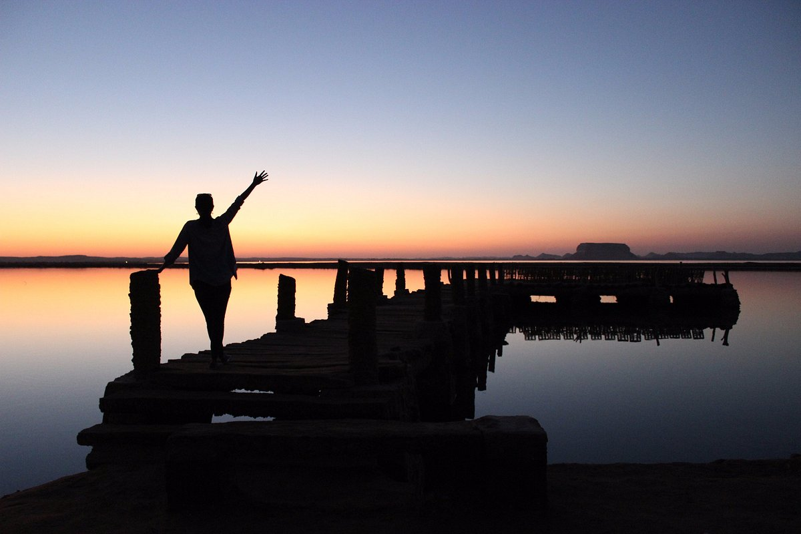This small hill, at the northern end of Siwa Town, is honeycombed with rock tombs peppered with wall paintings. Its name, Gebel Al Mawta, means 'Mountain of the Dead' and most of the tombs here date back to the 26th dynasty, Ptolemaic and Roman times.
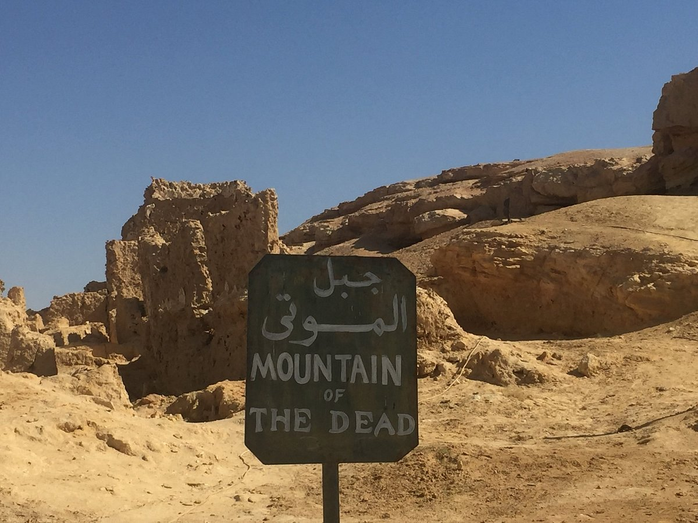 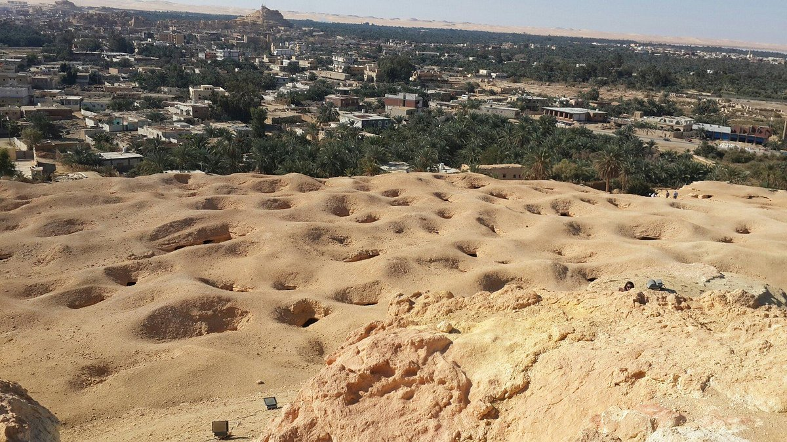The 26th-dynasty Temple of the Oracle sits in the northwest corner of the ruins of Aghurmi village. Built in the 6th century BC, probably on top of an earlier temple, it was dedicated to Amun (occasionally referred to as Zeus or Jupiter Ammon) and was a powerful symbol of the town's wealth.
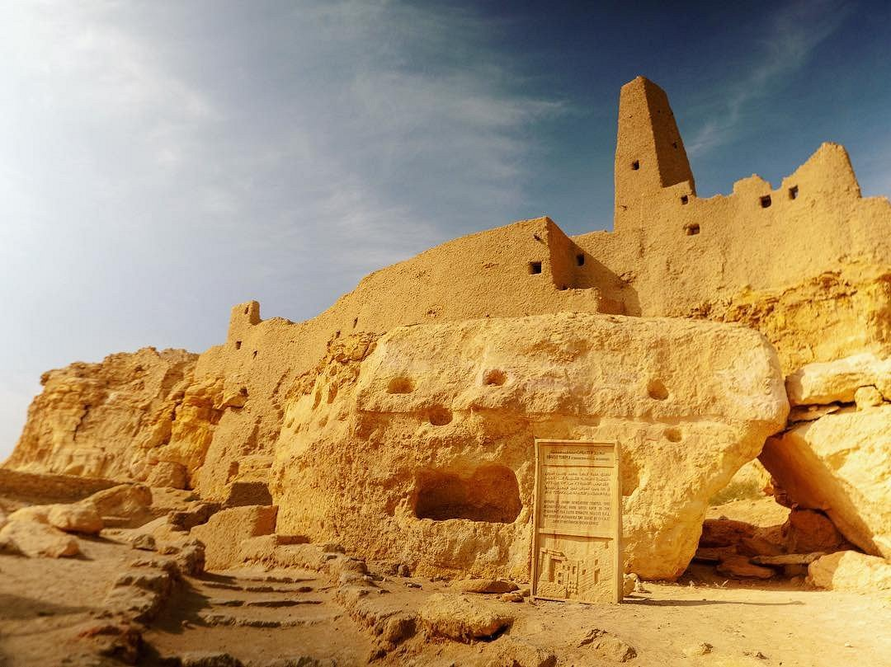 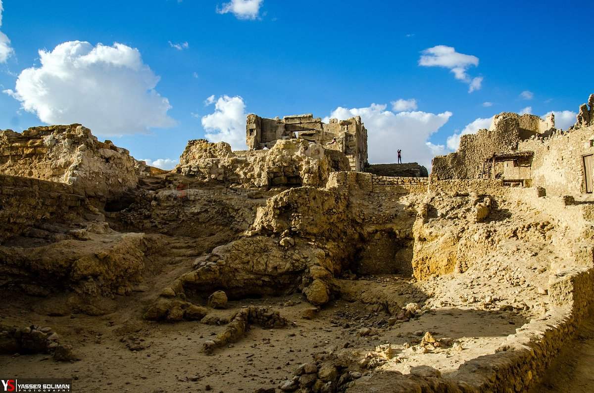